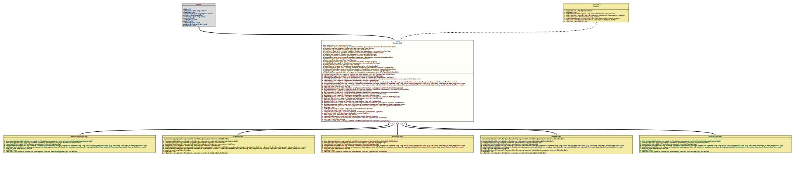

Class TypeSpecImpl
java.lang.Object
org.tquadrat.foundation.javacomposer.internal.TypeSpecImpl
- All Implemented Interfaces:
TypeSpec
- Direct Known Subclasses:
AnnotationTypeSpecImpl,ClassSpecImpl,EnumSpecImpl,InterfaceSpecImpl,RecordSpecImpl
@ClassVersion(sourceVersion="$Id: TypeSpecImpl.java 943 2021-12-21 01:34:32Z tquadrat $")
@API(status=INTERNAL,
since="0.0.5")
public abstract sealed class TypeSpecImpl
extends Object
implements TypeSpec
permits AnnotationTypeSpecImpl, ClassSpecImpl, EnumSpecImpl, InterfaceSpecImpl, RecordSpecImpl
The abstract base class for the implementations of
TypeSpec.- Author:
- Square,Inc.
- Modified by:
- Thomas Thrien (thomas.thrien@tquadrat.org)
- Version:
- $Id: TypeSpecImpl.java 943 2021-12-21 01:34:32Z tquadrat $
- Since:
- 0.0.5
- UML Diagram
-

UML Diagram for "org.tquadrat.foundation.javacomposer.internal.TypeSpecImpl"
{kind=link}
-
Nested Class Summary
Nested ClassesModifier and TypeClassDescriptionstatic classThe abstract base class for the implementations ofTypeSpec.Builder.static enumThe kind of type specified by aTypeSpecImplinstance.Nested classes/interfaces inherited from interface org.tquadrat.foundation.javacomposer.TypeSpec
TypeSpec.Builder -
Field Summary
FieldsModifier and TypeFieldDescriptionprivate final List<AnnotationSpecImpl>The annotations for this type.private final org.tquadrat.foundation.lang.Lazy<String>Lazily initialised return value oftoString()for this code block.private final JavaComposerThe reference to the factory.private final List<FieldSpecImpl>The fields for this type.private final CodeBlockImplThe initializer block for this type.private final CodeBlockImplThe Javadoc comment for this type.private final TypeSpecImpl.KindThe kind of this type.private final List<MethodSpecImpl>The methods for this type.The modifiers for this type.The name of this type.TODO Write the comment for the field m_OriginatingElements!!private final CodeBlockImplThe static initializer block for this type.The static imports.private final TypeNameImplThe superclass for this type.private final List<TypeNameImpl>The super interfaces for this type.private final Set<SuppressableWarnings>The suppressable warnings for the new type.private final List<TypeSpecImpl>The inner types for this type.private final List<TypeVariableNameImpl>The type variables for this type.static final StringThe name for an anonymous type in error messages: "<anonymousType>". -
Constructor Summary
ConstructorsModifierConstructorDescriptionprotectedTypeSpecImpl(TypeSpecImpl type) Creates a dummy type spec for type-resolution in CodeWriter only while emitting the type declaration but before entering the type body.protectedTypeSpecImpl(TypeSpecImpl.BuilderImpl builder) Creates a newTypeSpecImplinstance. -
Method Summary
Modifier and TypeMethodDescriptionstatic final TypeSpecImpl.BuilderImplDeprecated, for removal: This API element is subject to removal in a future version.static final TypeSpecImpl.BuilderImplannotationBuilder(ClassName className) Deprecated, for removal: This API element is subject to removal in a future version.Got obsolete with the introduction ofJavaComposer.static final TypeSpecImpl.BuilderImplanonymousClassBuilder(String format, Object... args) Deprecated, for removal: This API element is subject to removal in a future version.Got obsolete with the introduction ofJavaComposer.static final TypeSpecImpl.BuilderImplanonymousClassBuilder(CodeBlock typeArguments) Deprecated, for removal: This API element is subject to removal in a future version.Got obsolete with the introduction ofJavaComposer.Returns the anonymous type arguments.static final TypeSpecImpl.BuilderImplclassBuilder(CharSequence name) Deprecated, for removal: This API element is subject to removal in a future version.Got obsolete with the introduction ofJavaComposer.static final TypeSpecImpl.BuilderImplclassBuilder(ClassName className) Deprecated, for removal: This API element is subject to removal in a future version.Got obsolete with the introduction ofJavaComposer.protected static final intcompareMethodSpecs(MethodSpec m1, MethodSpec m2) Compares two instances ofMethodSpecfor their sort order.protected abstract TypeSpecImplCreates a dummy copy of the type spec that is used byemit(CodeWriter, String, Set)internally.final voidemit(CodeWriter codeWriter, String enumName, Set<Modifier> implicitModifiers) Emit the type to the given code writer.protected abstract voidemit4Foundation(CodeWriter codeWriter, String enumName, Set<Modifier> implicitModifiers) Emits the type to the given code writer, using the layout as defined by the Foundation library code.protected abstract voidemit4JavaPoet(CodeWriter codeWriter, String enumName, Set<Modifier> implicitModifiers) Emits the type to the given code writer, using the layout as defined by the original JavaPoet code.static final TypeSpecImpl.BuilderImplenumBuilder(CharSequence name) Deprecated, for removal: This API element is subject to removal in a future version.Got obsolete with the introduction ofJavaComposer.static final TypeSpecImpl.BuilderImplenumBuilder(ClassName className) Deprecated, for removal: This API element is subject to removal in a future version.Got obsolete with the introduction ofJavaComposer.abstract booleanprotected final Collection<AnnotationSpecImpl>Returns the annotations for this type.protected Map<String,ClassSpecImpl> Returns theenumvalues for this type.final JavaComposerReturns theJavaComposerfactory.protected final Collection<FieldSpecImpl>Returns the fields for this type.protected final CodeBlockImplReturns the initializer block for this type.protected final CodeBlockImplReturn the Javadoc for this type.protected final Collection<MethodSpecImpl>Returns the methods of this type.protected final CodeBlockImplReturns the static block for this type.Returns the static imports for this code block.protected final TypeNameImplReturns the superclass for this type.protected final List<? extends TypeNameImpl>Returns the superinterfaces for this type.final Collection<SuppressableWarnings>Returns the suppressable warnings that were set for this type.final List<TypeVariableNameImpl>Returns the type variables for this type, if any.abstract inthashCode()final booleanhasModifier(Modifier modifier) Checks whether the given modifier was applied to this type.private final StringThe initializer form_CachedString.Returns the inner types for this type.static TypeSpecImpl.BuilderImplinterfaceBuilder(CharSequence name) Deprecated, for removal: This API element is subject to removal in a future version.Got obsolete with the introduction ofJavaComposer.static final TypeSpecImpl.BuilderImplinterfaceBuilder(ClassName className) Deprecated, for removal: This API element is subject to removal in a future version.Got obsolete with the introduction ofJavaComposer.Returns the modifiers that are applied to this type spec.name()Returns the name of the class, interface or enum represented by this type spec instance.Returns the originating elements for this type.abstract TypeSpecImpl.BuilderImplReturns a new builder that is initialised with thisTypeSpecinstance.final StringtoString()final List<TypeSpecImpl>Returns the inner types for this type.
-
Field Details
-
NAME_ANONYMOUS_TYPE
The name for an anonymous type in error messages: "<anonymousType>".- See Also:
-
m_Annotations
The annotations for this type. -
m_CachedString
Lazily initialised return value oftoString()for this code block. -
m_Composer
The reference to the factory. -
m_FieldSpecs
The fields for this type. -
m_InitializerBlock
The initializer block for this type. -
m_Javadoc
The Javadoc comment for this type. -
m_Kind
The kind of this type. -
m_MethodSpecs
The methods for this type. -
m_Modifiers
The modifiers for this type. -
m_Name
The name of this type. -
m_OriginatingElements
TODO Write the comment for the field m_OriginatingElements!! -
m_StaticBlock
The static initializer block for this type. -
m_StaticImports
The static imports. -
m_SuperClass
The superclass for this type. -
m_SuperInterfaces
The super interfaces for this type. -
m_SuppressableWarnings
The suppressable warnings for the new type. -
m_TypeSpecs
The inner types for this type. -
m_TypeVariables
The type variables for this type.
-
-
Constructor Details
-
TypeSpecImpl
Creates a newTypeSpecImplinstance.- Parameters:
builder- The builder for this instance.
-
TypeSpecImpl
Creates a dummy type spec for type-resolution in CodeWriter only while emitting the type declaration but before entering the type body.- Parameters:
type- The source type.
-
-
Method Details
-
annotationBuilder
@Deprecated(since="0.2.0", forRemoval=true) public static final TypeSpecImpl.BuilderImpl annotationBuilder(ClassName className) Deprecated, for removal: This API element is subject to removal in a future version.Got obsolete with the introduction ofJavaComposer.Creates a builder for an annotation (a type with the kindTypeSpecImpl.Kind.ANNOTATION).- Parameters:
className- The name of the annotation.- Returns:
- The builder.
-
annotationBuilder
@Deprecated(since="0.2.0", forRemoval=true) public static final TypeSpecImpl.BuilderImpl annotationBuilder(CharSequence name) Deprecated, for removal: This API element is subject to removal in a future version.Got obsolete with the introduction ofJavaComposer.Creates a builder for an annotation (a type with the kindTypeSpecImpl.Kind.ANNOTATION).- Parameters:
name- The name of the annotation.- Returns:
- The builder.
-
anonymousClassBuilder
@Deprecated(since="0.2.0", forRemoval=true) public static final TypeSpecImpl.BuilderImpl anonymousClassBuilder(CodeBlock typeArguments) Deprecated, for removal: This API element is subject to removal in a future version.Got obsolete with the introduction ofJavaComposer.Creates a builder for an anonymous class.- Parameters:
typeArguments- The type arguments.- Returns:
- The builder.
-
anonymousClassBuilder
@Deprecated(since="0.2.0", forRemoval=true) public static final TypeSpecImpl.BuilderImpl anonymousClassBuilder(String format, Object... args) Deprecated, for removal: This API element is subject to removal in a future version.Got obsolete with the introduction ofJavaComposer.Creates a builder for an anonymous class.- Parameters:
format- The format.args- The arguments.- Returns:
- The builder.
-
anonymousTypeArguments
Returns the anonymous type arguments.- Returns:
- An instance of
Optionalthat holds the anonymous type arguments.
-
classBuilder
@Deprecated(since="0.2.0", forRemoval=true) public static final TypeSpecImpl.BuilderImpl classBuilder(ClassName className) Deprecated, for removal: This API element is subject to removal in a future version.Got obsolete with the introduction ofJavaComposer.Creates a builder for a regular class (a type with the kindTypeSpecImpl.Kind.CLASS).- Parameters:
className- The name of the class.- Returns:
- The builder.
-
classBuilder
@Deprecated(since="0.2.0", forRemoval=true) public static final TypeSpecImpl.BuilderImpl classBuilder(CharSequence name) Deprecated, for removal: This API element is subject to removal in a future version.Got obsolete with the introduction ofJavaComposer.Creates a builder for a regular class (a type with the kindTypeSpecImpl.Kind.CLASS).- Parameters:
name- The name of the class.- Returns:
- The builder.
-
compareMethodSpecs
Compares two instances ofMethodSpecfor their sort order.- Parameters:
m1- The first method spec.m2- The second method spec.- Returns:
- -1 if the first method spec will be sorted before the second, 1 if the first method spec will be sorted after the second, and 0 if both are equals.
-
createCopy
Creates a dummy copy of the type spec that is used byemit(CodeWriter, String, Set)internally.- Returns:
- The dummy copy.
-
emit
public final void emit(CodeWriter codeWriter, String enumName, Set<Modifier> implicitModifiers) throws UncheckedIOException Emit the type to the given code writer.- Parameters:
codeWriter- The target code writer.enumName- The name of the enum; will benullif not called to emit an enum constant.implicitModifiers- The implicit modifiers.- Throws:
UncheckedIOException- A problem occurred when writing to the output target.
-
emit4Foundation
protected abstract void emit4Foundation(CodeWriter codeWriter, String enumName, Set<Modifier> implicitModifiers) throws UncheckedIOException Emits the type to the given code writer, using the layout as defined by the Foundation library code.- Parameters:
codeWriter- The target code writer.enumName- The name of the enum; can benull.implicitModifiers- The implicit modifiers.- Throws:
UncheckedIOException- A problem occurred when writing to the output target.
-
emit4JavaPoet
protected abstract void emit4JavaPoet(CodeWriter codeWriter, String enumName, Set<Modifier> implicitModifiers) throws UncheckedIOException Emits the type to the given code writer, using the layout as defined by the original JavaPoet code.- Parameters:
codeWriter- The target code writer.enumName- The name of the enum; can benull.implicitModifiers- The implicit modifiers.- Throws:
UncheckedIOException- A problem occurred when writing to the output target.
-
enumBuilder
@Deprecated(since="0.2.0", forRemoval=true) public static final TypeSpecImpl.BuilderImpl enumBuilder(ClassName className) Deprecated, for removal: This API element is subject to removal in a future version.Got obsolete with the introduction ofJavaComposer.Creates a builder for anenumtype (a type with the kindTypeSpecImpl.Kind.ENUM).- Parameters:
className- The name of the class.- Returns:
- The builder.
-
enumBuilder
@Deprecated(since="0.2.0", forRemoval=true) public static final TypeSpecImpl.BuilderImpl enumBuilder(CharSequence name) Deprecated, for removal: This API element is subject to removal in a future version.Got obsolete with the introduction ofJavaComposer.Creates a builder for anenumtype (a type with the kindTypeSpecImpl.Kind.ENUM).- Parameters:
name- The name of the class.- Returns:
- The builder.
-
equals
-
getAnnotations
Returns the annotations for this type.- Returns:
- The annotations.
-
getEnumConstants
Returns theenumvalues for this type.- Returns:
- The
enumvalues.
-
getFactory
Returns theJavaComposerfactory.- Returns:
- The reference to the factory.
-
getFieldSpecs
Returns the fields for this type.- Returns:
- The fields.
-
getInitializerBlock
Returns the initializer block for this type.- Returns:
- The initializer block.
-
getJavadoc
Return the Javadoc for this type.- Returns:
- The Javadoc.
-
getMethodSpecs
Returns the methods of this type.- Returns:
- The methods.
-
getStaticBlock
Returns the static block for this type.- Returns:
- The static block.
-
getStaticImports
Returns the static imports for this code block.- Returns:
- The static imports.
-
getSuperClass
Returns the superclass for this type.- Returns:
- The superclass.
-
getSuperInterfaces
Returns the superinterfaces for this type.- Returns:
- The superinterfaces.
-
getSuppressableWarnings
Returns the suppressable warnings that were set for this type.- Returns:
- The warnings; the collection can be empty, but not
null.
-
getTypeVariables
Returns the type variables for this type, if any.- Returns:
- The type variables.
-
hashCode
-
hasModifier
Checks whether the given modifier was applied to this type.- Specified by:
hasModifierin interfaceTypeSpec- Parameters:
modifier- The modifier.- Returns:
trueif the given modifier has been applied to this type,falseotherwise.
-
initializeCachedString
The initializer form_CachedString.- Returns:
- The return value for
toString().
-
innerClasses
Returns the inner types for this type.- Specified by:
innerClassesin interfaceTypeSpec- Returns:
- The inner types.
-
interfaceBuilder
@Deprecated(since="0.2.0", forRemoval=true) public static final TypeSpecImpl.BuilderImpl interfaceBuilder(ClassName className) Deprecated, for removal: This API element is subject to removal in a future version.Got obsolete with the introduction ofJavaComposer.Creates a builder for an interface (a type with the kindTypeSpecImpl.Kind.INTERFACE).- Parameters:
className- The name of the class.- Returns:
- The builder.
-
interfaceBuilder
@Deprecated(since="0.2.0", forRemoval=true) public static TypeSpecImpl.BuilderImpl interfaceBuilder(CharSequence name) Deprecated, for removal: This API element is subject to removal in a future version.Got obsolete with the introduction ofJavaComposer.Creates a builder for an interface (a type with the kindTypeSpecImpl.Kind.INTERFACE).- Parameters:
name- The name of the class.- Returns:
- The builder.
-
modifiers
Returns the modifiers that are applied to this type spec.- Returns:
- The modifiers.
-
name
Returns the name of the class, interface or enum represented by this type spec instance. -
originatingElements
Returns the originating elements for this type.- Specified by:
originatingElementsin interfaceTypeSpec- Returns:
- The originating elements.
-
toBuilder
Returns a new builder that is initialised with thisTypeSpecinstance. -
toString
-
typeSpecs
Returns the inner types for this type.- Returns:
- The inner types.
-
JavaComposer.